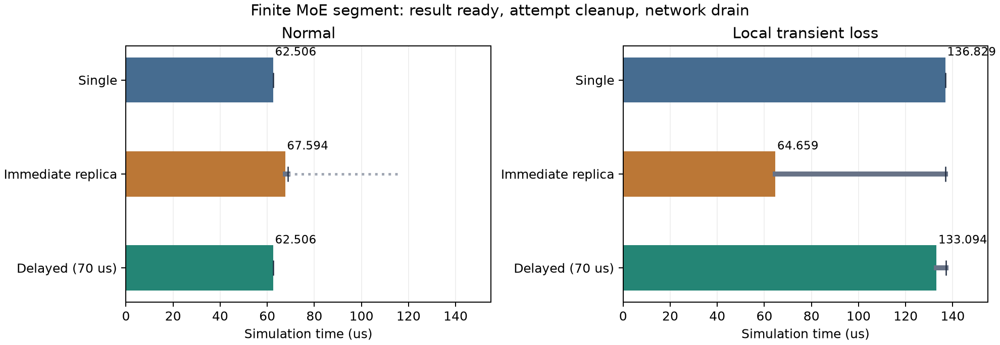
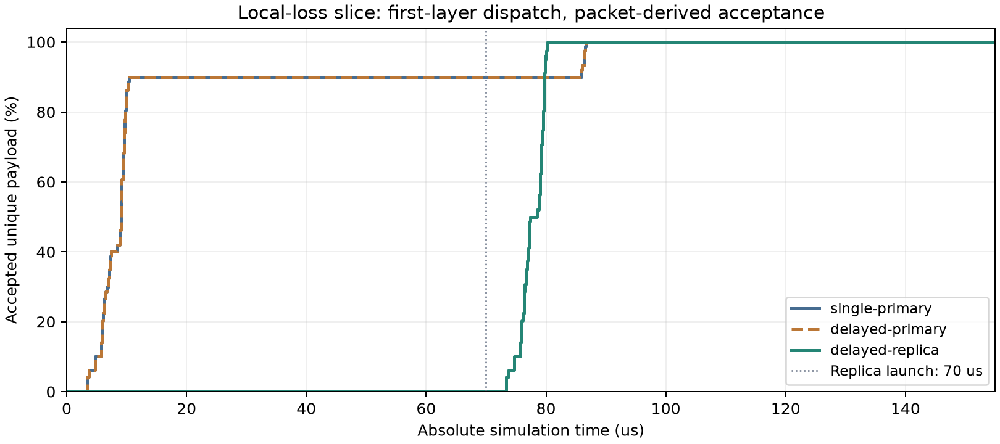

在同一128端点Clos上补齐成熟对照：先等正常任务；70微秒仍未完成，才启动完整备用。
正常时延迟副本结果62.506微秒，与无副本相比变化+0.000微秒；原始逐包记录完全一致，备用没有执行，但它的模型和KV已预留。
局部故障时结果133.094微秒，相对无副本节省3.735微秒（2.73%）。正收益表示这次成熟备用更早提供了结果；这不是新算法贡献。
时间均为微秒。结果就绪、最后尝试完成和网络排空分开；物理执行请求数包括已启动副本。
| 网络条件 | 策略 | 结果就绪 | 尝试完成 | 网络排空 | 实际请求执行数 | 有效通信字节 | 故障丢包 |
|---|---|---|---|---|---|---|---|
| 正常 | 无副本 | 62.506 | 62.506 | 62.506 | 4 | 1,760,704 | 0 |
| 正常 | 立即副本 | 67.594 | 68.863 | 117.091 | 8 | 3,521,408 | 0 |
| 正常 | 70微秒延迟副本 | 62.506 | 62.506 | 62.506 | 4 | 1,760,704 | 0 |
| 局部故障 | 无副本 | 136.829 | 136.829 | 136.829 | 4 | 1,760,704 | 6 |
| 局部故障 | 立即副本 | 64.659 | 136.829 | 136.829 | 8 | 3,521,408 | 6 |
| 局部故障 | 70微秒延迟副本 | 133.094 | 137.048 | 137.048 | 8 | 3,521,408 | 6 |

彩条到结果就绪；深灰实线到全部实际尝试完成；浅灰点线到网络排空。上述时间均由实际事件核对。

原始层3的Dispatch共433,920字节、30条消息。原尝试约10微秒已收到90%，剩余10%受局部丢包恢复影响，到86.698微秒才收齐。延迟备用在70微秒启动，到80.270微秒收齐该阶段数据。
这只是一个通信阶段的数据接收，后面还有确认、专家计算、Combine及下一层。它不能直接当作整段推理完成；完整结果只提前3.735微秒。蓝色与橙色接收曲线重叠，但原尝试源确认从90.702变为90.921微秒，晚219纳秒；最后原尝试也晚219纳秒。此处记录到确认拖延，尚未用独立端口/负载对照证明其具体成因。
曲线由完整逐包记录重建，仅表示本切片唯一有效字节已被传输接收端接受的累计量，不表示原始R1运行时抓包或GPU消费。CSV与summary随图保存。
16模拟服务器、8接入/8汇聚/4核心交换机，各层400Gbps、每链路1微秒，两组EP64，每rank每层4专家。4份真实R1-AWQ/MMLU专家选择，原始层3/4、一个Decode步；计算为声明成本。原始路由被投影为BF16通信，不是实机抓包。
normal不额外注入故障；local只在前20微秒丢弃发往GPU28的数据包，实际6包，ACK等控制保留。所有策略都启用选择性重传和参考DCQCN，全部原始计算、门限和ACK保留。
截止时间由原生ns-3定时事件产生，不拼接两次仿真。正常primary先完成后取消定时器，备用保持NOT_STARTED且不生成ITL；局部故障到70微秒才进入真实LLMServingSim调度队列。已启动尝试继续收尾。
两条件副本初始KV均预留10,092,544字节，正常在62.506微秒释放，故障在133.094微秒释放。结束占用0。KV是资源声明，未校验数值等价，也未模拟初态建立成本。
故障下仍执行双份通信和声明计算，而整体收尾由136.829增至137.048微秒。正常虽然没有重复执行，仍为备用预留10,092,544字节KV及完整专家部署。当前没有吞吐或容量机会成本测量，不能把少等3.735微秒直接解释成经济收益。
立即副本用更多工作换取故障时快速结果；延迟副本避免本次正常重复执行，但付出启动等待。新的方法需要在这两类成熟对照之上，同时证明结果等待、后台干扰或容量收益，不能把普通重传或普通延迟副本写成创新。
后续可研究多任务共享上行时，备用启动如何影响健康任务，以及只靠在线可见确认进度能否减少错误启动。需要事前固定指标与负载，再做对照，当前尚未验证这些新方法。
两份新网络各一次，四份旧结果只读复用；固定门槛未寻优。没有完整671B推理、GPU校准、数值验证、吞吐、生产故障概率或经济收益结论。完整分析JSON · 执行前冻结